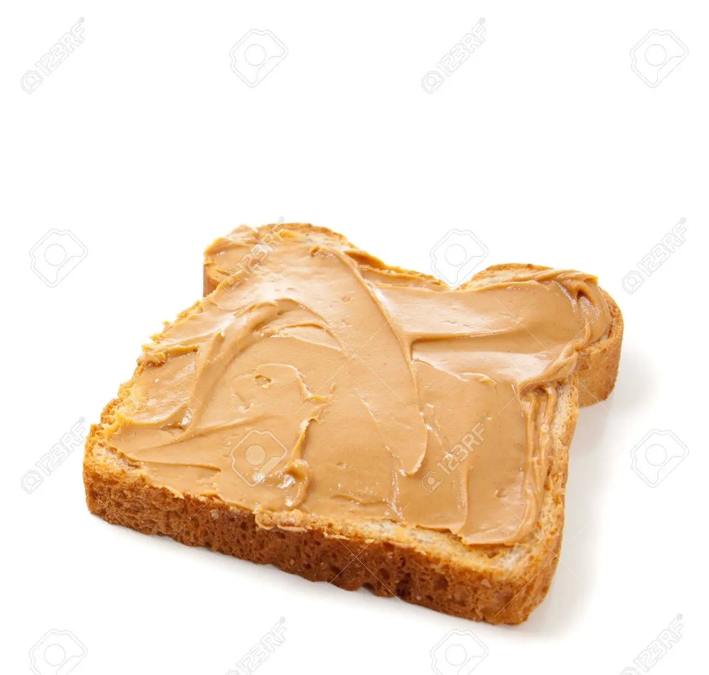

How to make: peanut butter sandwich (open-faced)

Our open-faced peanut butter sandwich recipe is a
masterpiece of culinary ingenuity, featuring artisanal
techniques that elevate a classic comfort food to new heights
of sophistication.
Ingredients:
- A single slice of bread
- Peanut butter (or other nut butter as alternative)
Steps:
- Toast bread slice to desired level
- Carefully place the toasted slice of bread on a plate
- Evenly spread a generous layer of nut butter over the bread
- Enjoy!